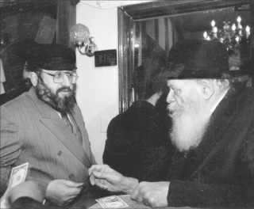

Episodes from the life of a young man who made his way through the spi
Episodes from the life of a young man who made his way through the spiritual minefield that was Soviet Russia.

“When I studied law at the university of Tashkent, new legislation was passed that said whoever studies law has to intern in this field. When I reached that stage, I looked for a suitable work environment and ended up working in the prosecutor’s office in the juvenile criminal department. I was responsible for determining which cases should be held over for prosecution and which not.
Before that, I was sent to work in the prosecutor’s office in the Carpathian region of the Ukraine. I arrived there and looked for a community of Jews with whom to daven and be in touch. As I walked through the streets, I ended up at one of the factories. I noticed one of the workers was wearing an Uzbeki cap. I looked at him and he looked at me. We began to talk and to my delight he was a religious Jew by the name of Avrohom Skablov.
We spent a lot of time together. He took me to the secret minyan where he davened on Shabbos. When we finally parted, I told him that if he had the opportunity to be in Tashkent, he was invited to visit me.
Two years later he came to Tashkent and he looked for me and finally found me. I happily hosted him in my house as long as he needed to be in the city.
He told me that he had relatives living in Tashkent. “If I tell them that I am here, I won’t feel comfortable telling them that I’m staying with someone other than them. So I will stay with you the entire time and only on my last day in Tashkent will I visit them and tell them that I am here for the day.”
That’s what he did. He went to visit his relatives on his last day in town. We arranged that I would meet him at the airport to say goodbye.
I arrived at the airport and saw him walking with his relatives. “Come, let me introduce you to my family,” he said and took me to see them. When I approached them, my heart sank. One of his relatives was the chief prosecutor for whom I worked.
At the first opportunity, I took him aside and asked him, “Tell me the truth. What did you tell her and what does she know about me?”
To my dismay, he said he had had a debate with her about whether there was still Yiddishkait in Russia. She maintained it no longer existed while he maintained that, “There are still young men, even in your city, who study Torah and keep Shabbos.” When she didn’t believe him, he introduced me as a living specimen of a shomer Shabbos.
I could not believe he had told her this. I didn’t know what to do or where to bury myself. My situation had clearly become problematic and I knew this meant I could no longer attend the davening and farbrengens so I wouldn’t give away the entire chevra, because she would surely keep tabs on me. I also had to warn the others not to contact me so they would not be putting themselves in danger. I had lost everything at once, the farbrengens, the shiurim and the davening, and my job and title that I had put so much work into, were all in danger.
Two days later I still did not dare go to work. I did not dare show my “religious-Jewish” face before the chief prosecutor whose job was to look for young men like me and put them behind bars. And yet, I knew I had to show up and could not simply disappear. I racked my brains over what I should do and finally decided to go back to work, come what may. I tried to act as usual, indifferent and calm.
Then I noticed that she was starting to help me. She gave me total leeway in my work and helped me with legal briefs. Beforehand, I worried about how to avoid working on Shabbos and Yom Tov. The lead attorney protected me in all matters – things had gotten much easier for me.
One day, she came over and quietly asked whether I could get matza for her for Pesach.
“Certainly. How much do you want?”
“50 kilos will be enough.”
“50 kilos are enough for an army,” I retorted in alarm.
“It’s not just for me. All my family members are communists but they all want matza, though none of them would dare buy it for themselves. If you bring it to me, I will give it out to all of them.”
I agreed. The matza baking was assigned to one of Anash who had already sat in jail. It was after the release of R’ Mottel Kozliner who arranged for him to make matza so he would have a source of income. Of course, it was a secret bakery.
I went to him and said that someone ordered 50 kilo of matza which would earn him a nice profit. I gave him the address of where to bring the matzos when they were ready. I did not say who had ordered them; I just gave him an address on a piece of paper.
The baking was done secretly and very quickly and one night, he packed the 50 kilos in plastic and paper, wrapped it all well, and went to the address I had given him. He quietly went up to the second floor, rang the bell, and who opened the door? The prosecutor who had prosecuted him in court and made every effort to put him in jail!
He was frightened and nearly fainted, but quickly recovered and turned to leave with the matza so the woman would think that he had rung her bell by mistake. She stopped him and said, “One minute, who are you looking for?”
He began apologizing and explained he had made a mistake but she insisted, “Who are you looking for? I know all the tenants in the building.”
“No thank you. I will find it myself.”
She persisted and he realized he couldn’t get rid of her and had to say the truth, that he had matza.
“So why didn’t you say so? Come inside.”
That night, Mottel Kozliner came to me and gave it to me but good. “Are you insane? He nearly had a heart attack on her doorstep!”
By the way, the woman eventually made aliya and she lives in a major Israeli city today.
***
When I visited R’ Betzalel Schiff for this article [back in 2001], I visited him in the offices of the party Yisroel B’Aliya in Yerushalayim where he was the director of the party and their activities throughout the country. In the crowded offices were dozens of new and old-time immigrants who were waiting for help. R’ Betzalel circulated among them wearing his kasket, tzitzis out, and his beard that testified more than anything else to the fact that he is religious. To the new immigrants waiting in the office, the concept of “shomer mitzvos” is unfamiliar. They looked at him in astonishment. It was only his fluent Russian that clinched the fact of his origin.
He serves as director of the Shamir organization and has been responsible for dozens of projects including publishing books. He traveled to Russia numerous times where he uncovered dozens of files on Chassidim and spiritual giants who were interrogated by the KGB.
It was hard to find a time to talk to him to hear some of his memories. All the phone calls and dozens of memos piled up on his desk were momentarily set aside as he nostalgically shared stories of his tumultuous childhood and young adulthood:
I was born in Samarkand to my father, the Chassid, R’ Yosef Schiff. My older brothers are R’ Aryeh Leib and R’ Gershon and my sister married R’ Avrohom Chein. My father was a public activist of the first order. He was an official in the government in Samarkand and was in charge of all the industrial factories in the area. He also served as the second secretary of the party, an important and powerful position. Despite his political standing, our home was always open to guests, invited and uninvited. Many people ate and slept in our house. We had many guests for Shabbos, Jews of all kinds and backgrounds. At a certain point, many Zionist youth who had been arrested because of their involvement in Zionism, returned from the labor camps and stopped off in Samarkand. Where could they eat? They all knew they could go to Yosef Schiff.
There were Zionists, Bundists, members of Beitar, and members of HaShomer HaTzair, and many others. The Shabbos meal was a forum of debate for them as to who was to blame for various events as well as discussion and commentary.
It wasn’t easy hosting people like these. There were freed prisoners and their emotional state was precarious. They were bitter and were liable to do anything. I remember that when guests that we were nervous about slept in our house, my mother would collect all the metal implements in the house and hide them so that nobody would be able to get up and hit someone with them.
***
The first interrogation that I experienced is one that I remember from first grade. The police discovered some irregularities at the family’s factory. A policeman came to our house with a warrant for me and my cousin which stated that on a certain date, we had to be at the police station in order to testify against my father. The family business was illegal since everything belonged to the government. We had to testify that we knew that our entire family worked at the factory.
On the appointed day, before we left, my mother kissed me and said, “I know you are a smart boy and you know where you are going and what and how to respond. Don’t be afraid of them. Be strong and G-d will bless you.”
(Laughing): We went there with our lunch sacks in our hands like we did when we went to school. We waited outside and one of the policemen brought us into a room, seated us, and began asking us questions. Then we wrote a statement in our childish handwriting based on what they told us to write. A few minutes later, a Moslem-Tatar interrogator came in who read the papers and smiled. Then he said, “Fine children. Now you can go home.”
As a child, I went to the government school where they indoctrinated us in communism, but when we went home we had to forget it all and sit with a Gemara or Chumash and start learning. My grandfather, the Chassid, R’ Yerachmiel Chadash was responsible for our chinuch and when we came home, he would tell us, “Take off that shmatte,” referring to the neckerchief that was part of our school uniform. Then we sat down to learn Torah.
In 1952, I was in second grade when my father died at the young age of 53. I was an orphan and although I had an extended family, I had to deal with the turbulence of life on my own, as I will relate.
The main problem with school was attendance on Shabbos. From a young age we learned to make up stories about a sore finger or a headache and having to go to the doctor.
All the yaldei Anash (Lubavitcher children) attended school with me. There were Aharon’chik Makovetzky, Moshe Lebenhartz, Moshe and Mordechai Garelik, the Frankel children, and many others. We were a tight group of friends although we tried not to stand out.
I remember a moving episode from that time. One day, the school nurse came to vaccinate the children. I was in the second grade and since I wore tzitzis I was afraid she would notice. I didn’t know what to do and so I decided to go to the bathroom and take off the tzitzis, but the principal blocked the door and did not allow anyone to leave so we would all get vaccinated.
I went over to him and said I just needed the bathroom for a minute and I would come back, but he knew that the children were afraid of the injections and tried to get out of being vaccinated. He said drily, “Get vaccinated and then you can go.” I was stuck.
I had no choice. When I went over to the nurse I picked up my shirt in a way that she wouldn’t see my tzitzis. She vaccinated me and didn’t say a word. I was happy that nothing untoward had happened.
The next morning when I went to school, I walked down the hall and saw her standing near the nurse’s office. “Hey boy, come here,” she said when she noticed me. I thought, oh no, what does she want. She took me into her office and quietly asked me, “Was that a tallis or t’fillin?” I stammered that it was tzitzis. Her eyes lit up and she said, “My grandfather also had those,” and she kissed me and sent me on my way.
As I said, the afternoons were devoted to learning Torah. For a while I learned with the Chassid, R’ Chaim Zalman Kozliner and later on, I learned with R’ Zalman Buber. Although we only learned for half a day, I know that I received more from my teachers than any child today since each of the melamdim was tremendously knowledgeable and an outstanding Chassid. They did not have many children to teach and so they put a tremendous amount into us.
At the beginning of fifth grade, in 5717/1957, I transferred to a special school for working children. We were three Lubavitcher children in the class, Aharon’chik Makovetzky, me, and Elozor Garelik. Why did we switch schools? Because this school had no classes on Shabbos and that made life easier for us.
In this school too, we tried not to stand out, but one day one of the teachers discovered that we were religious since we did not show up at school on Jewish holidays. The punishment was most unpleasant. The principal had all the students in the school line up on the playing field. Then he took the three of us out of the line and placed us in front of everyone and said, “See what a bad example you are! Even after fifty years of wonderful communist rule, they still remain believing Jews.”
To us children, this was a scathing shame. Each of us mumbled something about why we didn’t come on the holidays. Aharon’chik exclaimed that he was sick and couldn’t come. In any case, we realized that the time had come to leave and go elsewhere. I went to a different school and Elozor Garelik went to Tashkent.
I finished school at 15, completed my matriculation exams and went to Lenin University in Tashkent. It was the largest university in the city.
To support myself, I worked in Mendel Garelik’s factory in which we made signs for manufacturing plants and factories. I worked there together with other Chassidim and the conditions there were very pleasant. The atmosphere of being together with other Chassidim helped tremendously. Among the workers were R’ Lipa Klein and many other Chassidim. R’ Mendel made it a rule that all the employees had to sit down and learn Torah for two hours a day.
This factory manufactured instructional signs of the type placed in factories and other work areas such as, “Do Not Approach Machine When In Operation,” “Wear Gloves,” which button to press first and second, etc. Russian law mandated that every plant had to have clear signage and rules of conduct. Rules were written on large papers that were distributed to employees and on large signs posted at the entrance of every plant.
Most of the workers in this factory were Jews, and aside from them there were some token goyim, because it wasn’t possible for any industrial entity to operate with an exclusively Jewish workforce. This made it much easier for us on Shabbos. We arranged with the gentile workers that they would not show up for work on Shabbos and we all enjoyed the day off. That’s how the factory was able to stay closed most Shabbasos of the year.
The fact that we were all able to work together engendered many interesting episodes. There were two ways of making the signs – one by hand, to produce each sign from scratch. The price of a sign like that was twenty rubles. The other, illegal way, was copying previous signs. The price of a copied sign was only twenty kopeks. Obviously, the profit was enormous. For this work we also received various benefits since the paints that we supposedly had to work with were poisonous and dangerous. We were given extra coupons for milk and bread.
I remember that one time a supervisor came to the factory to make an inspection. Before he came, we poured hazardous materials on the floor and when he walked in he had to close his nose because of the pungent odor. He asked, “How can you work in such a dangerous place? Are you willing to do anything for money?!”
One day, we found out that on the upcoming Shabbos we were supposed to receive our salaries from the supervisor. Of course we did not show up for work on Shabbos and the gentile manager knew we did not work on Shabbos. He asked us to come in, in order to get our salaries. He said, “You don’t have to work if you don’t want to, but at least come and get your money.”
As I mentioned, I was working in the factory in the mornings and studying law in the afternoons. Other Jewish students attended university with me. Every Shabbos, we walked to a minyan that was an hour and a half away. We arrived for the davening and then made Kiddush and stayed to farbreng. R’ Mendel Futerfas and R’ Berke Chein sometimes farbrenged. In addition to my law studies, I had a close connection with various Chassidim and set times to learn Torah.
I graduated university at 22 and went back with my diploma to Samarkand and began giving shiurim to bachurim.
After Stalin (may his name be erased) died, the general situation eased up. Until then, life was precarious and dangerous and nobody knew how the day would end. The atmosphere lightened up a bit and there was some relief when it came to religious persecution too.
In 5727/1967, four young men founded Chamah (Chaburas Mezakei HoRabbim): Moshe Nisselevitz, my two brothers Gershon and Aryeh Leib, and Bereleh Zaltzman. I can still picture how the four made a pact regarding the mosad, giving their hands one to the other.
They began organizing shiurim and activities to spread Judaism. Until then, a lot of the burden was on my parents and now it all became more organized.
I had mentioned that my father died when I was in second grade. Tragically, my mother died a week before my wedding. After getting up from Shiva, the members of Chamah came to me with a suggestion. “Since you have to say Kaddish anyway, be a melamed and organize a minyan too. I agreed and became a Torah teacher. I had about thirty students whom I taught regularly.
There were also some fellows who came from outside of Samarkand and who lived in my house, sleeping and eating with me, with whom I learned Torah. They were young Lubavitchers or young men from the Bucharian k’hilla. Among other things, I printed sichos of the Rebbe that had been smuggled to us in various ways.
In connection with that, I want to tell you something that happened to me. I was riding my bike and had a volume of the Rebbe’s sichos in my coat when I felt a bang and I flew a few meters in the air. A car had hit me and my leg was broken; the pain was terrible. I looked around and was alarmed to see all the sichos that had been in my coat scattered all around.
People had gathered round in order to help me and I fearfully began gathering the sichos so I wouldn’t be caught red handed. I picked up the pages and put them in the binding and wondered who to give it to so they would not be discovered as I was being treated. I suddenly noticed Bentzion Goldschmidt and I gave him the book and fainted immediately thereafter from the pain. The fear was so great that I simply did not allow myself to faint until after I had transferred the treasure to trustworthy hands.
After the accident, I spent a lot of time in bed with my leg in a cast. I arranged for a minyan in my house. One day, in the middle of davening, a policeman walked in. There was no time to hide anything and there were lit candles and Siddurim with Russian translation on the table. He looked around and then opened a Siddur and flipped through the pages. He began reading the words of the Kaddish that were transliterated into Russian. He was an Uzbeki policeman and not particularly smart. It was quite amusing to hear him read nearly the entire Kaddish, word for word, and not understanding any of it.
He asked me: What language is this? I lied and said it was Arabic. “No, it doesn’t seem to be Arabic,” he said. He closed the Siddur and left.
Since my parents had already died and I lived alone, I undertook many missions on behalf of Anash that were very dangerous. For seven years, I traveled every year to Georgia to pick lulavim and hadasim for Sukkos. We received the esrogim from abroad and aravos were obtainable in Tashkent. Every year, I left right after Rosh HaShana with the goal of returning before Yom Kippur.
I traveled to Tbilisi, the capitol of Georgia, where there was a policeman who knew me who would bring me to the area where the date palms grew near the beach. I gave him money and he would wait for me with great respect. He also obtained a ladder for me and a saw and I would cut down about ten lulavim for the entire k’hilla. Then I continued to Kutaisi, Georgia’s second largest city, where I cut hadasim that grew in the courtyard of the shul.
***
Evening fell in Yerushalayim. The hour was late and R’ Betzalel had work to do. “We will talk again another time,” he assured me as he went back to his work.
Menachem Ziegelboim. "Episodes from the life of a young man who made his way through the spi." Beis Moshiach, no. 830 (April 2, 2012).